Base graphics
Some say that R base graphics is only good for quick and dirty data exploration, but not very straightforward for creating polished publication quality graphs (but you can master it if you really dive into it).
library(help = "graphics") # complete list of functionsBase R has extensive set of graphical parameters, which can be set or query using function par:
par() # set or look at the available graphical parametersScatterplot
Scatterplots can be created using plot(). If we use plot() command with only one variable, we get graph with values versus index. We can use this representation to find out where we have gross outliers in our variable.
plot(iris$Sepal.Length)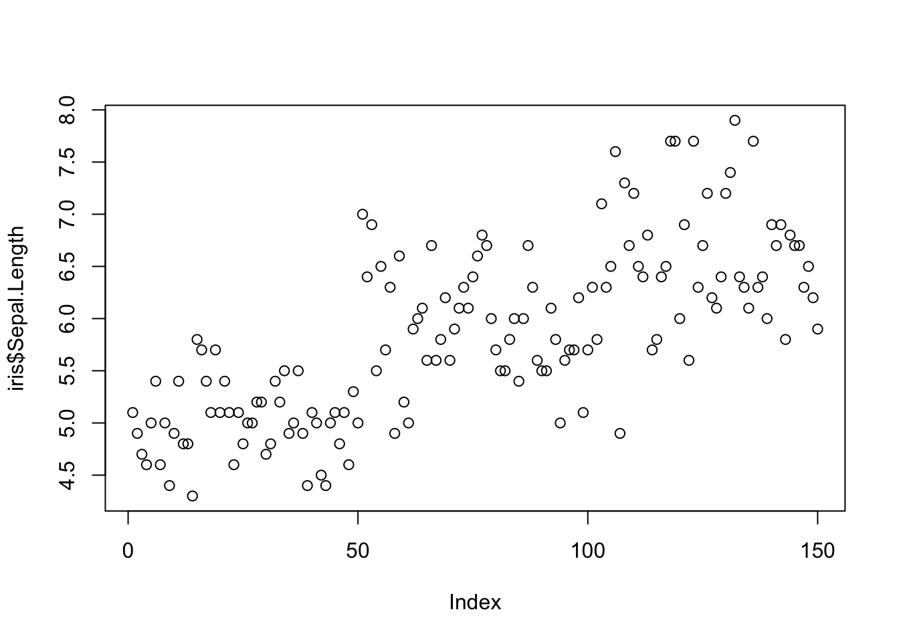
Even more sensible use of scatterplot is visualizing relationship between variables. Here, we explore the relationship between sepal length and width in different iris species.
plot(iris$Sepal.Length, iris$Sepal.Width)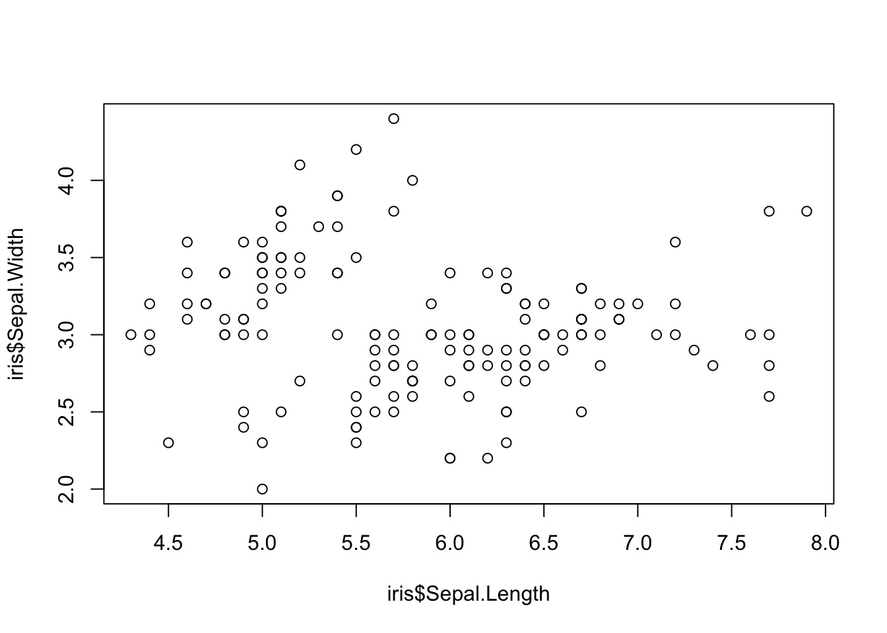 Looks OK-ish. But we don’t know witch dot belongs to which of the three iris species (setosa, versicolor, virginica).
We can fix that with col= argument, where iris$Species column is used as the factor by whose levels to color the dots (R will automatically order factor levels in alphabetical order: setosa, versicolor, virginica). palette() gives you the colors and their order, and it allows you to manipulate the color palette (see ?palette).
plot(iris$Sepal.Length, iris$Sepal.Width,
col = iris$Species, # dots are colored by species
pch = 16, # we use filled dots instead of default empty dots
las = 1) # horizontal y-axis labels
palette()## [1] "black" "#DF536B" "#61D04F" "#2297E6" "#28E2E5" "#CD0BBC" "#F5C710"
## [8] "gray62"legend("topright", # we place legend to the top right corner of the plot
legend = levels(iris$Species), # species names in the legend
pch = 16, # dot shape
bty = "n", # the type of box to be drawn around the legend: "n" no box
col = 1:3) # new colors are added with numbers 1 to 3. This will work like using a factor.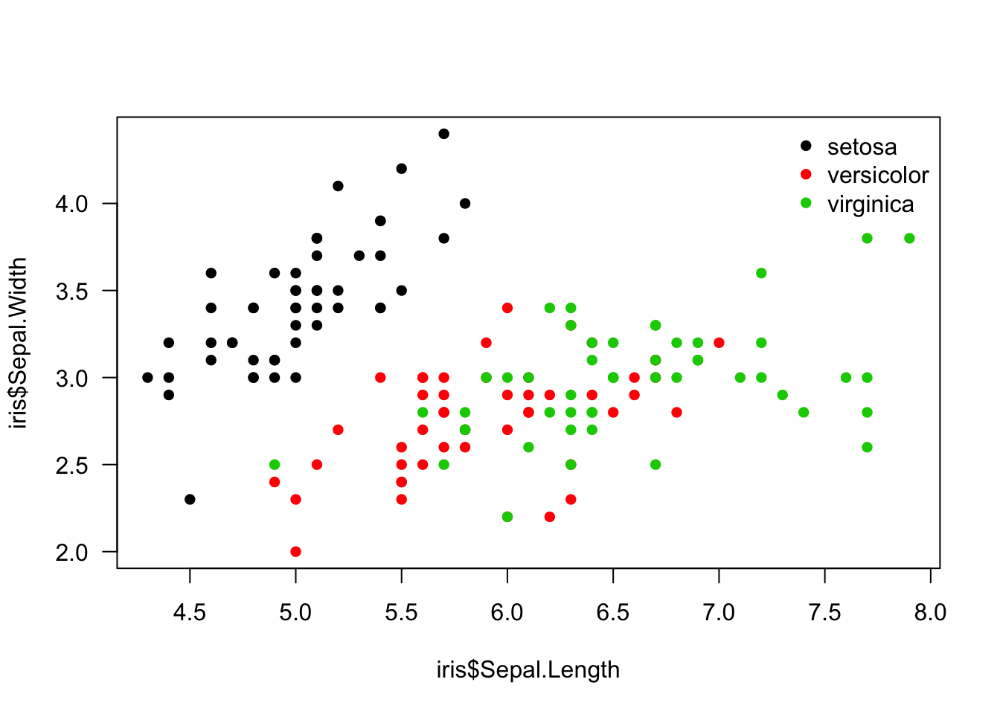
We can plot all variable pairs into a single matrix of scatterplots:
pairs(iris[1:4], # same output can be achieved also by using just plot()
main = "Iris Dataset",
pch = 21, # dots need to be big enough to display color
bg = iris$Species) # color by species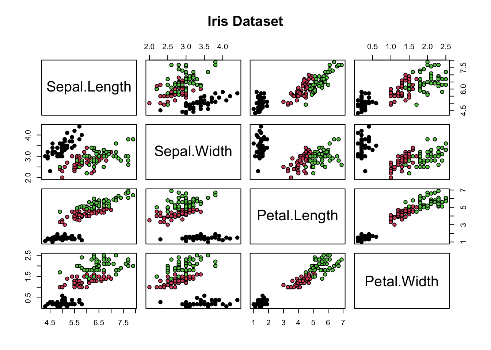
Matrix scatterplots can be created using the R formula interface, which allows better control over variables we want to explore. We use “Swiss Fertility and Socioeconomic Indicators (1888)” data as example.
head(swiss)## Fertility Agriculture Examination Education Catholic
## Courtelary 80.2 17.0 15 12 9.96
## Delemont 83.1 45.1 6 9 84.84
## Franches-Mnt 92.5 39.7 5 5 93.40
## Moutier 85.8 36.5 12 7 33.77
## Neuveville 76.9 43.5 17 15 5.16
## Porrentruy 76.1 35.3 9 7 90.57
## Infant.Mortality
## Courtelary 22.2
## Delemont 22.2
## Franches-Mnt 20.2
## Moutier 20.3
## Neuveville 20.6
## Porrentruy 26.6Here we plot matrix scatterplot using formula method from function example ?pairs, if left hand side (dependent variable) of the formula is empty, we get all combinations of variables in the right hand side:
pairs(~ Fertility + Education + Catholic, data = swiss,
subset = Education < 20, main = "Swiss data, Education < 20") # formula method from function example 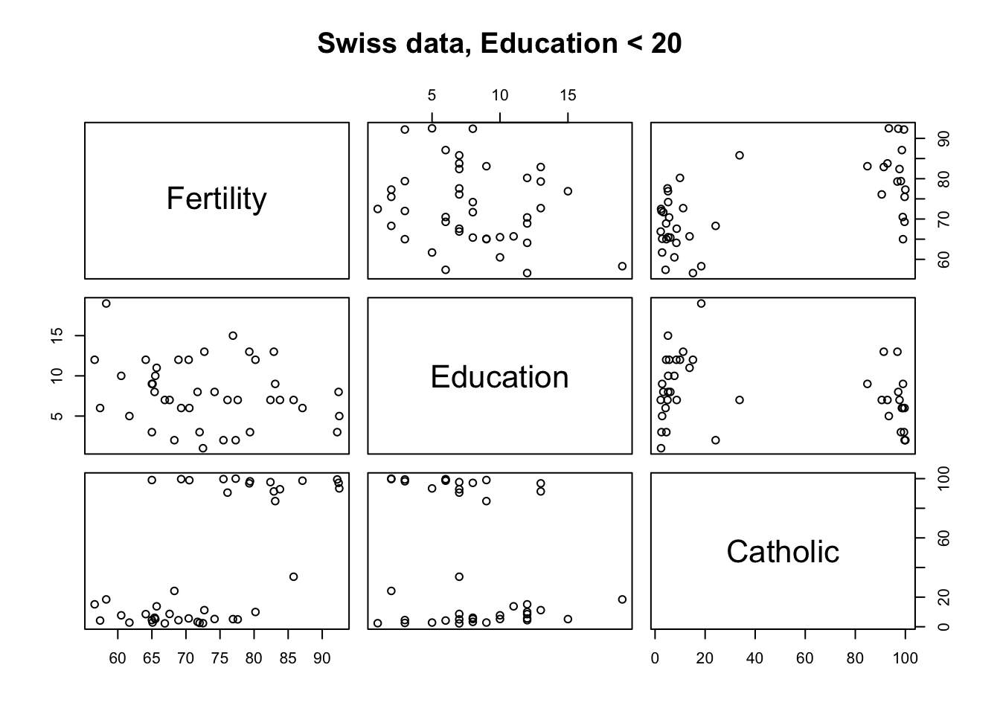
Scatterplots are also ideal for visualising relationships between independent and dependent variables. We use R in-house dataset CO2 showing carbon dioxide uptake in grass plants.
We plot plant CO2 uptake versus its concentration and add calculated linear model fit to the scatterplot:
plot(x = CO2$conc, y = CO2$uptake, #
pch = 16, col = "blue", # dot type and color
main = "Carbon Dioxide Uptake in Grass Plants", # scatterplot
las = 1) # horizontal y-axis labels
mod1 <- lm(uptake~conc, data = CO2) # linear model fit
abline(mod1, col = "red", lty = 2, lwd = 2) # add lin model fit to the scatterplot
coefs <- coef(mod1) # linear model coefficients
b0 <- round(coefs[1], 2) # round for printing
b1 <- round(coefs[2], 2) # round for printing
r2 <- round(summary(mod1)$r.squared, 2) # r squared
eqn <- bquote(italic(y) == .(b0) + .(b1)*italic(x) * "," ~~ r^2 == .(r2)) # formula and rsuared for printing
text(750, 20, labels = eqn) # add equation to the plot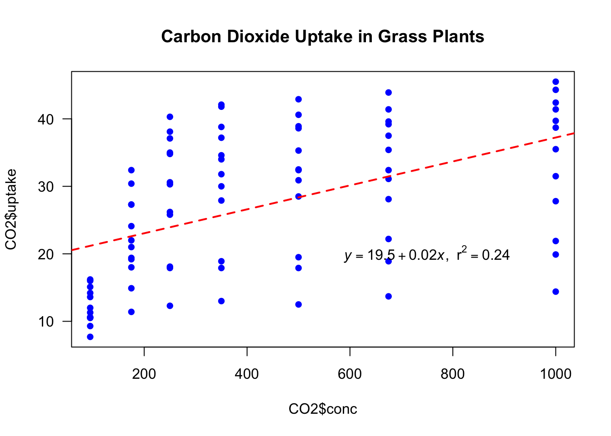
As we can see in the upper plot, the linear model does not explain the relationship between conc and uptake very well. Therefore we fit exponential function, which seems to fit much better to these data.
plot(uptake ~ conc,
data = CO2,
pch = 16, col = "blue",
main = "Carbon Dioxide Uptake in Grass Plants",
las = 1) # horizontal y-axis labels
lines(x = CO2$conc, y = predict(mod1), col = "red", lty = 2, lwd = 2) # add linear model fitted line
mod2 <- nls(uptake ~ SSlogis(conc, Asym, xmid, scal), data = CO2) # nonlin fit using SSlogis selfstart model
xvals <- seq(from = 95, to = 1000, by = 3) # new x values for which we want model prediction
lines(x = xvals, y = predict(mod2, list(conc = xvals)), col = "green", lty = 2, lwd = 2) # add nonlin fit line
legend("bottomright", legend = c("linear model", "exponential model") , lty = 2, col = c("red", "green"), bty = "n", lwd = 2) # add legend to the plot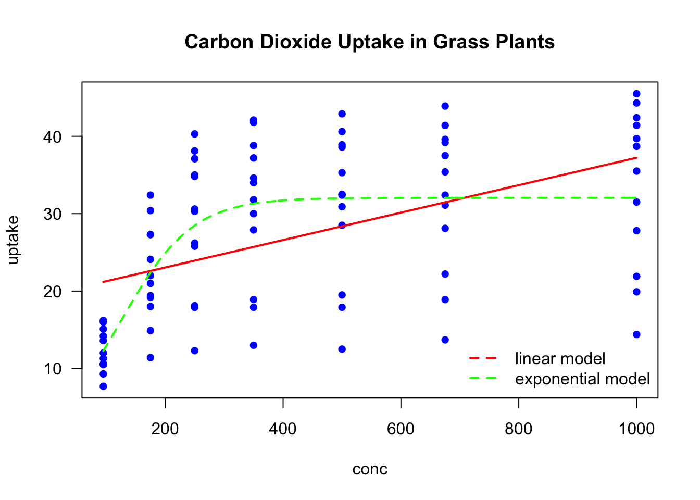
Histogram
To illustrate hist function we use 2013 Tartu cross-country skiing marathon 63 km times (Aeg in Estonian).
load("data/Tartu_Maraton_2013.RData")
head(tm_2013)## # A tibble: 6 x 7
## Koht Nr Nimi Elukoht Aeg Vanuseklass Kuubik
## <int> <int> <chr> <chr> <chr> <chr> <dbl>
## 1 NA 0 Laugal, Emil Harju maakond <NA> <NA> 0
## 2 5500 6083 Miezys, Audrius Leedu 6:25:42 M50 0
## 3 1 4 Oestensen, Simen Norra 2:45:01 M21 1
## 4 2 1 Brink, Joergen Rootsi 2:45:02 M35 1.00
## 5 3 2 Aukland, Anders Norra 2:45:02 M40 1.00
## 6 4 50 Näss, Börre Norra 2:45:02 M21 1.00We first convert times in H:M:S format into periods using hms() function from lubridate package, then convert them to period objects with as.duration function (ibid.). as.duration gives us seconds, which we convert to decimal hours by dividing with 3600s (== 1h).
library(lubridate) # for easy time manipulation
times <- hms(tm_2013$Aeg[-1])
times <- unclass(as.duration(times))/3600 # unclass gives us numbers (time in seconds), which we further divide by 3600 to get time in hoursLets have a look at TP-s finish time and convert it into decimal hours:
tm_2013[tm_2013$Nimi=="Päll, Taavi",]$Aeg # TP-s time in H:M:S## [1] "4:34:20"tp_time <- unclass(as.duration(hms(tm_2013[tm_2013$Nimi=="Päll, Taavi",]$Aeg)))/3600 Now we plot a histogram of Tartu skiing marathon times and add a vertical line at TP-s time:
hist(times,
breaks = 100, # seems to be a good granularity
main = "Tartu cross-country skiing\nmarathon 2013, 63 km", # plot title. Pro tip: '\n' works as enter.
xlab = "Time, h", # x-axis label: time in seconds
las = 1) # horizontal y-axis labels
abline(v = tp_time, col = "red", lwd = 2) # add red vertical line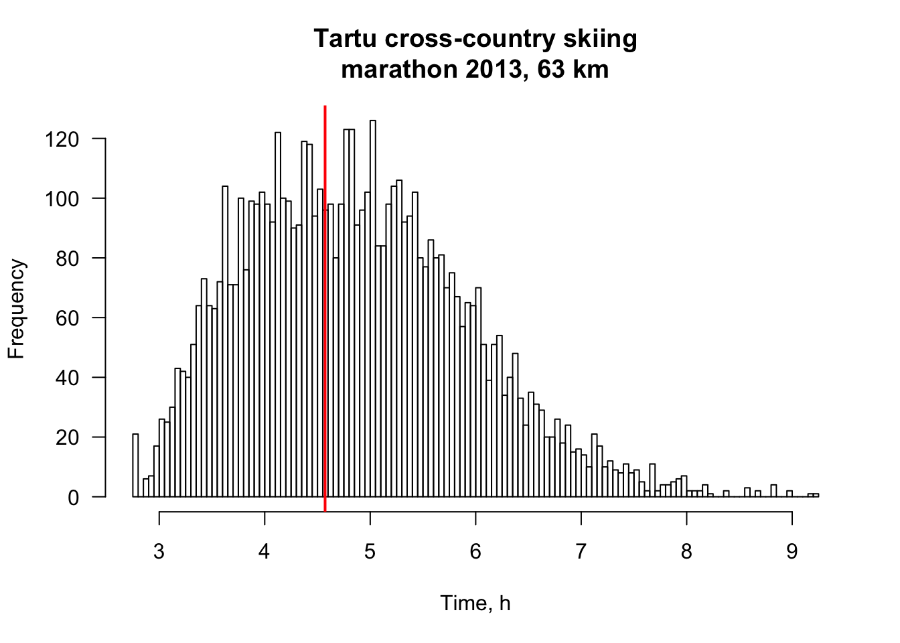
hist(times, breaks = seq(2, 10, by = 0.25)) # breaks after every 15 min
Boxplot
Boxplots can be created, unsurprisingly, by boxplot:
boxplot(iris$Sepal.Length ~ iris$Species,
las = 1,
xlab = "Species",
ylab = "Sepal Length",
main = "Sepal Length by Species in Iris",
ylim = c(0, max(iris$Sepal.Length)))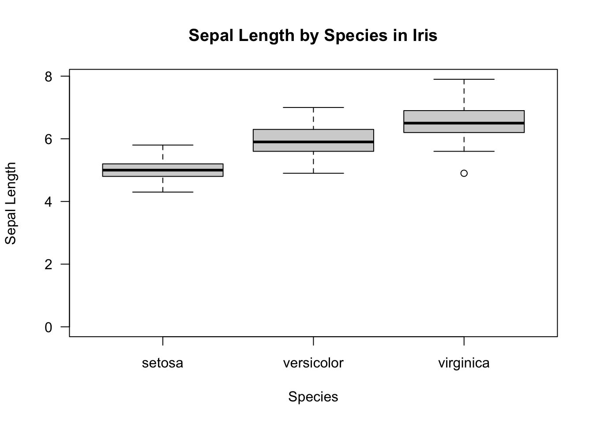
Bargraphs
This is no-brainer! Base graphics function barplot creates for us barplots with either vertical or horizontal bars:
load("data/Rio2016_medals.RData") # we use rio medals data barplot(medals$Total,
names.arg = medals$country_un, # country abbreviations, x-axis labels
horiz = TRUE, # horozontal y-axis
cex.names = 0.5, # smaller labels
las = 1, # horizontal axis labels
col = 4, # fill color nr 4 from default palette = "blue"
xlab = "Total number of medals", # x-axis label
main = "Country ranking by Rio 2016 medals", # main title
sub = "Ranking also takes into account the number of gold, silver and bronze medals.", # subtitle or ingraph caption
cex.sub = 0.5) # labels perpendicular to x-axis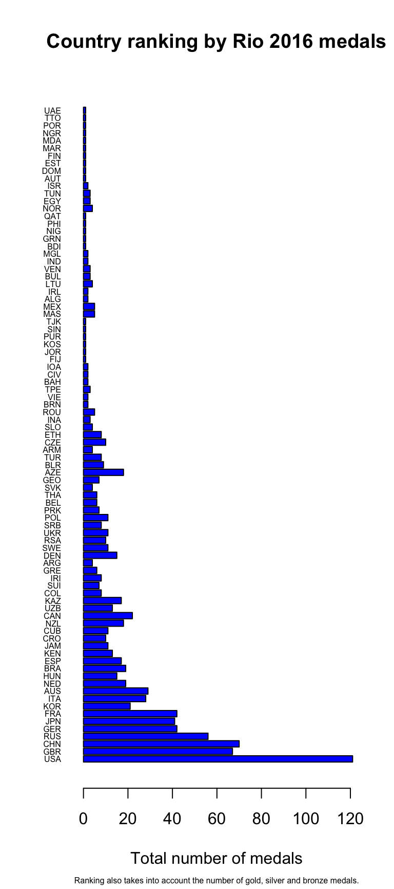
Combine multiple subplots
Here we show, how to combine multiple subplots into one overall graph in base R, using either the par() or layout() function. Plotting linear model fit object outputs four separate diagnostic plots – “Residuals vs Fitted”, “Normal Q-Q”, “Scale-Location” and “Residuals vs Leverage”:
plot(mod1)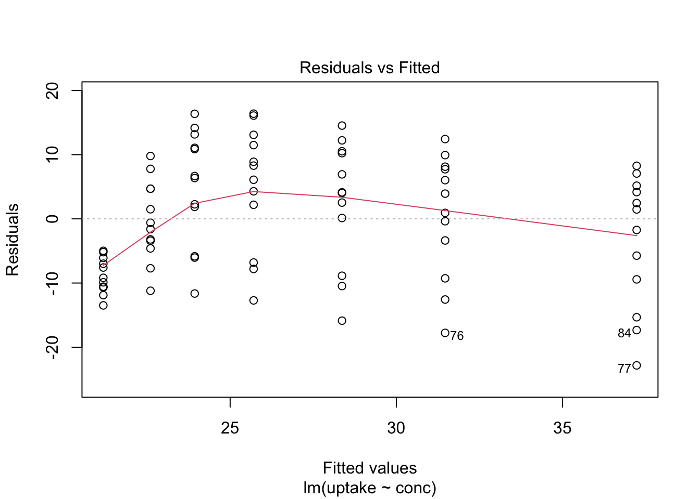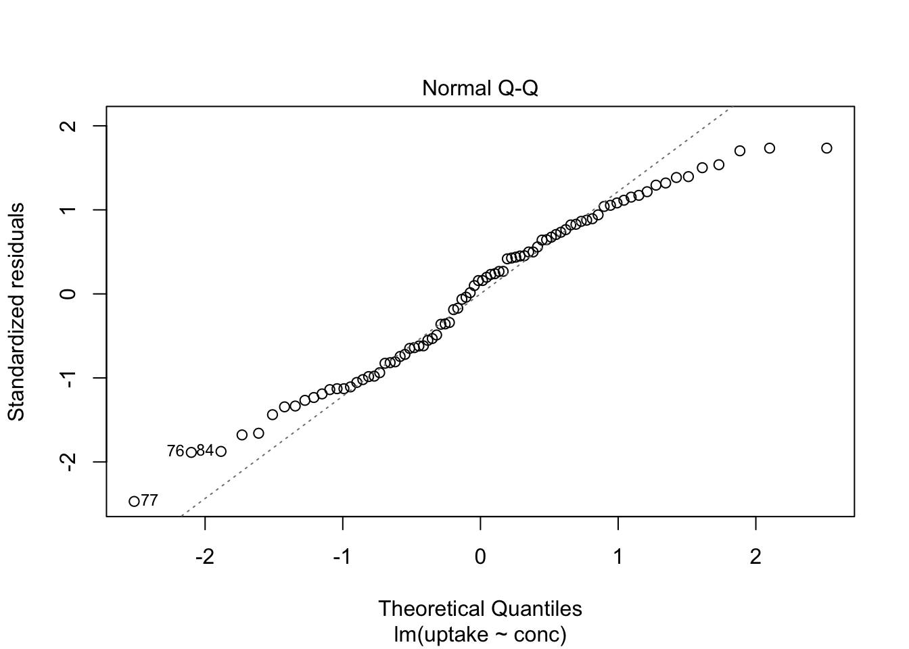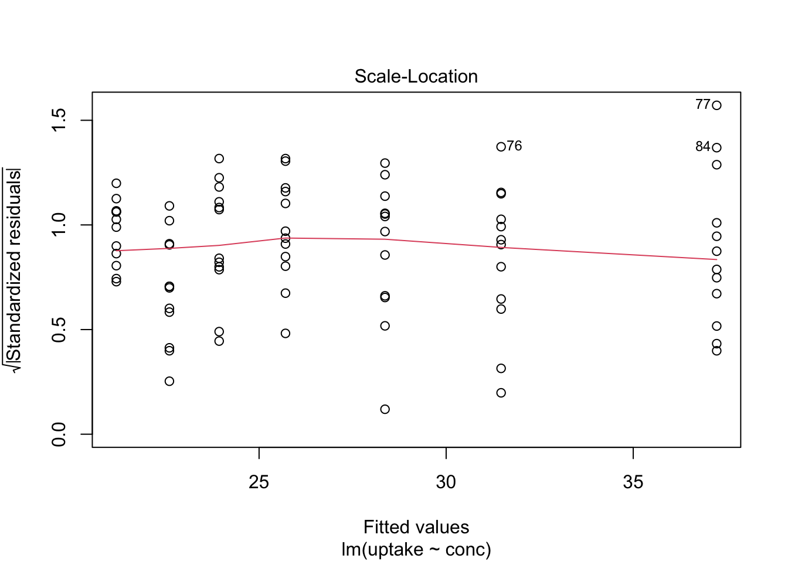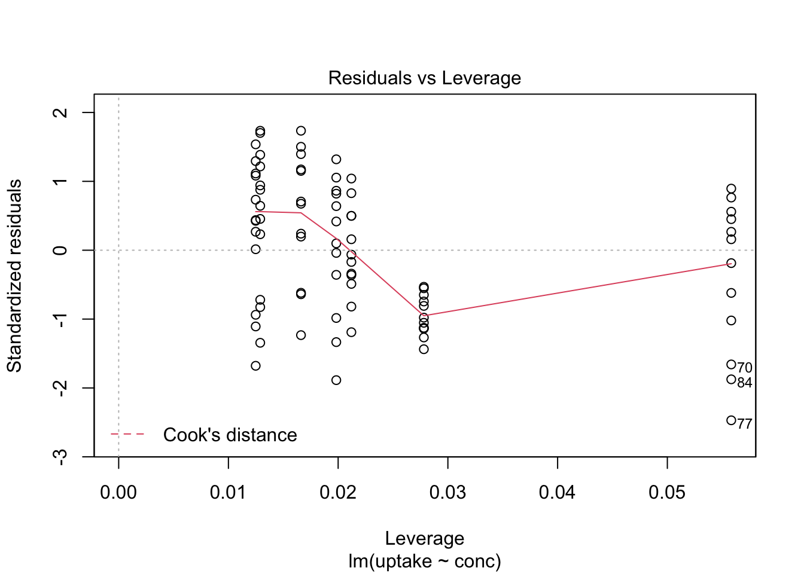
By telling graphics device to create four slots, arranged 2x2, in our plot window, using par function argument mfrow=c(nr, nc), we can tidy up all this information little bit:
par(mfrow=c(2,2)) # number of rows, number of columns
plot(mod1) # plots are arranged into matrix in order of appearance
dev.off()## null device
## 1layout() function specifies graph layout using matrix. Here we create 2x2 layout specified by matrix – plots one and two will appear in the first column and third plot will be placed into second column and occupies two slots:
layout(matrix(c(1,2,3,3), 2, 2))
plot(iris$Sepal.Length, iris$Sepal.Width, col = iris$Species, pch = 16, las = 1)
plot(uptake ~ conc, data = CO2, pch = 16, col = "blue", main = "Carbon Dioxide Uptake in Grass Plants", las = 1)
barplot(medals$Total,
names.arg = medals$country_un, # country abbreviations, x-axis labels
horiz = TRUE, # horozontal y-axis
cex.names = 0.5, # smaller labels
las = 1, # horizontal axis labels
col = 4, # fill color nr 4 from default palette = "blue"
xlab = "Total number of medals", # x-axis label
main = "Country ranking by Rio 2016 medals", # main title
sub = "Ranking also takes into account the number of gold, silver and bronze medals.", # subtitle or ingraph caption
cex.sub = 0.5)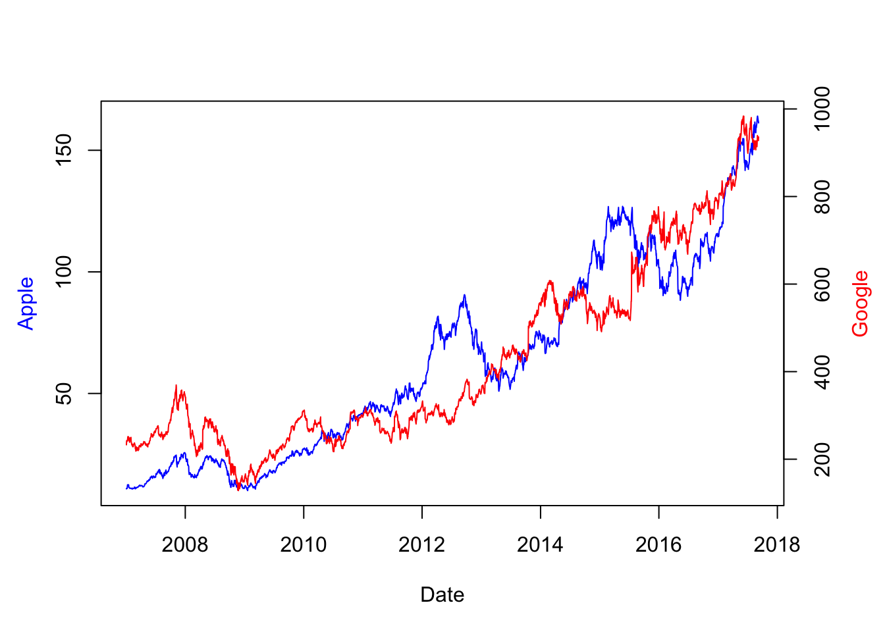
dev.off()## null device
## 1If you want to revert your par(mfrow=... to the original settings with single slot in graphics device, use following approach:
Either run par again with mfrow=c(1,1) settings
par(mfrow=c(1,1))Or assign original settings to object and after you have done your multiplot load these setting using par:
originalpars <- par(mfrow=c(1,2)) # direct current mfrow to originalpars object
hist(rnorm(100))
plot(rnorm(100),rnorm(100))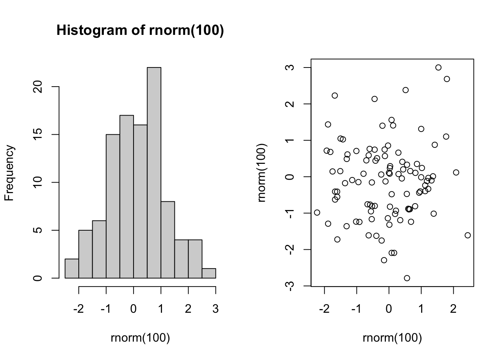
dev.off()## null device
## 1par(originalpars) # loads/restores previous parameters
originalpars # we have only mfrow here ## $mfrow
## [1] 1 1Save plots
To save a plot into file you have to open the file and plot device first and then plot any graphics. Base R has graphics devices for BMP, JPEG, PNG and TIFF format bitmap files and for PDF.
png(filename = "Rplot%03d.png",
width = 480, height = 480, units = "px", pointsize = 12,
bg = "white", res = NA, ...,
type = c("cairo", "cairo-png", "Xlib", "quartz"), antialias)We want to save our disposable output files to directory output, therefore we first check if we already have this directory, if not then we create it:
if(!dir.exists("output")) dir.create("output")In case of .png:
png(file = "output/iris_sepal.png", width = 1200, height = 800, res = 300)
plot(iris$Sepal.Length, iris$Sepal.Width, col = iris$Species, pch = 16, las = 1)
dev.off()## quartz_off_screen
## 2pdf(file = if(onefile) "Rplots.pdf" else "Rplot%03d.pdf",
width, height, onefile, family, title, fonts, version,
paper, encoding, bg, fg, pointsize, pagecentre, colormodel,
useDingbats, useKerning, fillOddEven, compress)width, height – the width and height of the graphics region in inches. The default values are 7.
pdf(file = "output/co2_uptake.pdf")
plot(uptake ~ conc, data = CO2, pch = 16, col = "blue", main = "Carbon Dioxide Uptake in Grass Plants", las = 1)
dev.off()## quartz_off_screen
## 2list.files("output")## [1] "co2_uptake.pdf" "iris_sepal.png"